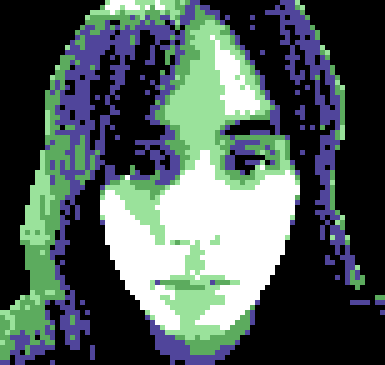
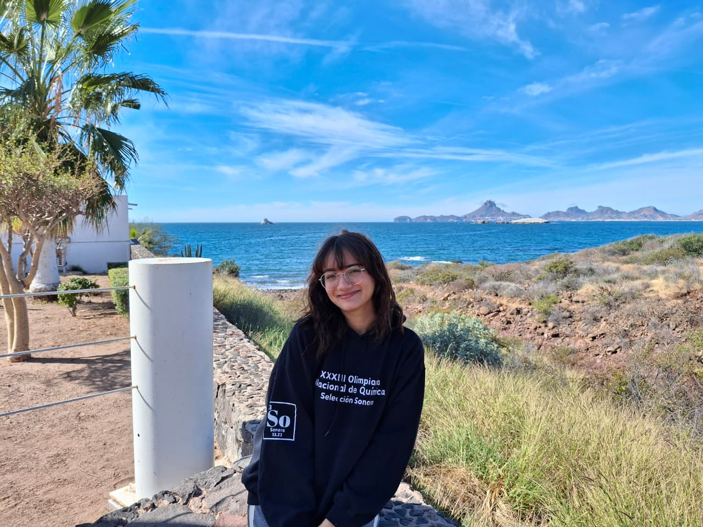

Extended credits webpage
Direct contact: beavertale.game@gmail.com
We are a couple of Mexican programmers working on our very first video game project. We love animals, and we wanted to explore an experience where players could use animal-specific skills and build all the game mechanics around that idea.
We chose beavers because of their construction skills, their importance in ecosystems, and, of course, their cuteness.
Additionally, we have two friends from our city helping us create the music and sound effects.
You can find us on the following social media platforms. If you would like to contact us for professional or personal topics, you can do so through any of the options below.
Email: beavertale.game@gmail.com — for professional inquiries.
Instagram or TikTok, where you can see our progress on the game.
Steam — our official (not released yet) page where you will be able to buy and follow the game.
Discord — our official discord server to participate with the community.
You can support us by sharing our game, recommending it to your friends, playing it, and giving us your feedback. We also currently have an open Kickstarter campaign where you can support us with any amount you like.
You can play a demo at Itch.io!

Hi, I’m one of the creators of Beavertale. Together with my partner, we came up with the idea and have been developing it ever since. My responsibilities in this project include visuals, game design, narrative, level design, programming, product management, and part of the marketing.I hope you enjoy the game as much as I enjoyed working on it, and that you stick around for future projects. If you want to reach me, you can contact me at:
gustavogtznav@gmail.com LinkedIn Twitter
If you want to see more of my work, you can check it out here:

Hi! My name is Denisse and I am a computer science student who loves silly animals. I'm very happy working on this project with my partner, inspired by our love of beavers (have you seen them scratching themselves!). My tasks include programming, co-creation of the game, creating and editing marketing content and managing social media! I also enjoy painting, playing the electric guitar and doing ballet.Here is my email for any professional or personal issues:
Miguel was responsible for composing several tracks for the game, including the music heard on the map, as well as songs for the forest and cave levels. He also created multiple sound effects and helped with various aspects of sound design.
If you would like to contact him to collaborate or simply send a message, you can reach him at miguelsn243@gmail.com
Pepe composed several tracks, including the main menu music and additional songs for the forest and cave levels, as well as various sound effects.
If you would like to hear more of his work, we invite you to check out his SoundCloud.
🦫 Santiago Robles 🦫 Katie Figueroa Guardiola 🦫 Orlando López Roque 🦫 Eduardo 🦫 Mario Castro 🦫 Juan Daniel 🦫 Jorge Luna 🦫 Jesus Antonio Flores Briones 🦫 Mario Hermann
🦫 Dabi Durazo Bartolini 🦫 JocNavs 🦫 Miguel 🦫 Joseph Dey 🦫 Amanda 🦫 Julien Leclere 🦫 Rhys Cullen
🦫 Iann Solano 🦫 Chelsea 🦫 Ana Laura Chenoweth Galaz 🦫 Armando 🦫 Geo 🦫 Esteban 🦫 Miranda :) 🦫 Luis Jácome 🦫 TheBeezKneez 🦫 sraech 🦫 Paupau 🦫 Nicolas Brown 🦫 Raul Lopez 🦫 Jovanna Amiraxel Reyes Casillas 🦫 mariana uribe 🦫 Phoenix 🦫 Francesco Giorgini 🦫 Dante Tostado 🦫 Fermin Alejandro Ahumada Garcia 🦫 F2P 🦫 chemA 🦫 Baldr 🦫 Josip Barun 🦫 Pk Insect 🦫 Goobie 🦫 Cade Moore 🦫 Kevin 🦫 ethan baier 🦫 Abbey Brown 🦫 Porco 🦫 Gerardo(LCDF)
🦫 SamKezRossetto 🦫 MortDrennan 🦫 Arletth Martínez 🦫 Ricardo Payan 🦫 salamander butcher 🦫 Cesar Guillermo Alcaraz Montelon
🦫 dania vega
We want to give special thanks to our friends and families who always support us. To our musician friends who joined the project to help us, to our school partners for the feedback and to our professor, Eduardo Acuña, for his constant interest and support in the game.
Also, to everyone who plays the game or takes the time to read this, we hope you enjoy Beavertale.